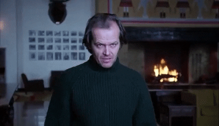

Considerada la mejor película de terror de la historia
Pero ¿qué hace a El resplandor tan especial? ¿Por qué generación tras generación de espectadores la consideran tan terrorífica? La respuesta en realidad es bastante sencilla. El resplandor es una película ambigua. El miedo es la emoción primaria gracias a la cual hemos sobrevivido como especie. Frente a una situación de aparente peligro, el miedo nos incita siempre a huir. Y es importante recalcar la palabra “aparente”, ya que lo que provoca el estado de alerta es el desconocimiento, la mera posibilidad, la ambigüedad de la situación.
Durante los primeros veinte minutos de metraje, sabemos que el hotel Overlook está encantado, que Jack tiene antecedentes violentos y que Danny, su hijo, posee el resplandor. Lo interesante de la historia no es el “qué ocurrirá” (eso resulta evidente), sino el “cómo”. Y es aquí donde Kubrick se aleja de las convenciones y crea una obra diferente y perturbadora, arrastrándonos a un descenso en espiral hacia la locura en el que todos los elementos cinematográficos juegan a esta ambigüedad, a crear una sensación de extrañeza y alerta constante que mantiene al espectador en tensión, dotando a la cinta de una atmósfera absolutamente terrorífica.
Empezando por el primer plano: una toma aérea de las montañas y un coche por una carretera sinuosa, mostrando por un lado el aislamiento hacia el que se dirigen los personajes, uno de los temas centrales, y por otro, dando la sensación de que algo los observa y los acecha. Esta sensación será constante en la película, y abundan los ejemplos, como esa increíble transición en la que pasamos de un plano de Jack mirando la maqueta del laberinto a un plano cenital de esta, que en seguida descubrimos que no es tal, sino el auténtico laberinto, con Wendy y Danny recorriéndolo, presentando a Jack como una figura acechante y terrorífica.
Aunque el ejemplo más claro tal vez sean los numerosos planos de seguimiento de personajes, sobre todo dorsales, como los famosos planos de Danny recorriendo los interminables pasillos del hotel con su triciclo, en los que, cada vez que gira una esquina, el espectador aguanta la respiración esperando ver algo terrorífico que no aparece.
Y, precisamente, cuando finalmente encontramos el esperado terror, dos niñas gemelas en este caso, resulta de los más extraño. Parecen inofensivas, pero su rostro resulta perturbador, inexpresivo, su sonrisa podría esconder cualquier cosa. Y el hecho de que sean gemelas, idénticas, simétricas, hablando a la vez, dota a la escena de una gran antinaturalidad.
Pero si hay un elemento que predomina por encima de todos y hace que El resplandor sea tan diferente es el ritmo. Todo el cine de Kubrick presenta un ritmo muy especial propio del cineasta, amante de la lentitud, que en el caso que nos ocupa, se nos presenta como algo antinatural y perturbador; todo es demasiado tranquilo por muy evidente que resulten las amenazas. Los diálogos son pausados, creando una tensión que nada tiene que ver con las conversaciones que en su mayoría resultan banales y vacías.
